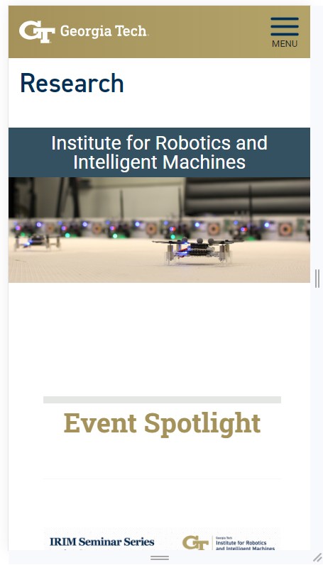

Visual Hierarchy
Organization/Company: National Aeronautics and Space Administration (NASA)
Website: https://www.nasa.gov/
Mobile view:

Comment:
NASA website uses a good visual design, color and contrast that creates visual hierarchy on the page. Some elements appear to be more important than others. That helps determine what grabs the user's attention first and what level of importance is assigned to various design elements. The contrast in value and saturation creates the visual hierarchy. For example, the colors for both the font and the background of the "Learn more" button suggest that the user should read these recent articles as they promotes recent NASA achievements.
Rule of Thirds
Organization/Company: Georgia Institute for Robotics and Intelligent Machines
Website: https://research.gatech.edu/robotics
Mobile view:

Comment:
The rule of thirds is a method of dividing an image or drawing into different sections using columns and rows to form a grid. The grid consists of three rows and columns evenly spaced to form nine equal squares that fit the image. This site integrates the rule of thirds perfectly into its home page. The image is aligned in such a way as to capture the user's attention while giving an impression of fluidity, unlike symmetrical designs, which suggest immobility and rigidity. In other words, the image isn't necessarily centered but located in the right spot to grab the user's attention at first glance.
White Space and Clean Design
Organization/Company: Massachusetts Institute of Technology (MIT)
Website: https://www.mit.edu/
Mobile view:
Comment:
The MIT website is a good illustration of white space and clean design. It's visually easy to navigate with a simple, clutter-free design. The benefits of this design style include a clear, consistent color palette, plenty of negative space, intuitive navigation, simple typography, and above all, faster site page display.